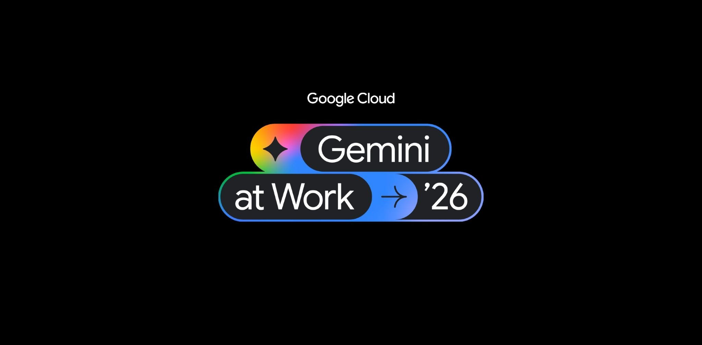

AI NEWS ISSUE 11
회사 계정으로 일하는 AI,
보안 점검을 돕는 AI
Google은 팀원처럼 일하는 AI를, Anthropic은 보안 점검을 돕는 AI 서비스를 발표했습니다. 어떤 일을 맡길 수 있고, 사람이 무엇을 확인해야 하는지 살펴봅니다.

AT A GLANCE
30초 요약
- AI의 계정 Google은 전용 이메일과 회사 계정으로 일하는 ‘동료 에이전트’를 발표했습니다. 어떤 자료를 보여주고 어디까지 맡길지 정해야 합니다.
- 비용과 데이터 Google은 AI의 사용 비용에 한도를 두고, ‘매출’ 같은 업무 용어를 같은 기준으로 해석하도록 돕는 기능도 소개했습니다.
- 보안 점검 Anthropic OSS Scanner는 선정된 오픈소스 프로젝트를 무료로 정기 검사합니다. AI가 보낸 보고서는 담당자가 다시 확인해야 합니다.
- 사람의 판단 11월 12일 시행될 Anthropic 정책은 건강·재정 등에 영향을 주는 판단에서 사람이 검토해야 할 범위를 더 분명히 했습니다. 위험한 장비 동작을 멈출 수 있어야 한다는 조건도 추가했습니다.
10월 8일자 공식 발표와 관련 문서를 2026년 10월 9일 한국시간 기준으로 확인했습니다. 기능과 수치는 각 회사가 발표한 내용이며, 직접 성능을 시험하지는 않았습니다. 업무 예시와 실험 제안에는 모임의 해석임을 표시했습니다.
팀 채팅방에 AI를 초대해 문서 수정을 부탁한다고 생각해보세요. 문서를 수정한 기록에는 누구의 이름을 남겨야 할까요? AI가 보안 문제를 찾았다고 보고서를 보내왔다면, 실제 문제인지 확인하는 일은 누가 맡아야 할까요?
이번에 Google과 Anthropic이 발표한 소식은 이런 질문으로 이어집니다. AI에게 더 많은 일을 맡기려면, 어디까지 맡길지와 결과를 어떻게 확인할지도 함께 정해야 합니다. 두 회사가 발표한 기능을 차례로 살펴보고, 우리 업무에 적용할 때 생각해볼 점을 짚어봅니다.
01 / GEMINI COWORKER AGENT
팀 채팅방에 초대하는 AI,
자기 계정으로 일합니다
Google Cloud는 Gemini at Work 2026에서 Gemini agent를 공개했습니다. 에이전트는 목표를 전달받으면 여러 도구를 사용해 일을 처리하는 AI입니다.
Google은 이 AI를 Gmail·문서·캘린더 같은 Google Workspace 도구와 Microsoft 365·Slack·Jira 등에 연결한다고 설명했습니다. 복잡한 일은 임시로 만든 보조 에이전트들에게 나누어 맡기는 방식입니다. Google 공식 한국어 발표 ↗
그중 동료 에이전트(Coworker Agent)는 정해진 역할을 꾸준히 맡는 팀원에 가깝습니다. 회사 주소록에 등록된 자기 계정과 전용 이메일·캘린더·Drive를 갖습니다. 팀원이 채팅방에 초대하거나 문서 댓글에서 부르면, 자기 이름으로 답하고 문서를 수정한 기록도 남긴다는 설명입니다.
Google 발표를 풀어 쓴 설명용 도식
누가 요청했고, 누가 실행했을까요?
- 01 · 사람일과 자료 전달팀원이 할 일을 요청하고 필요한 문서를 공유합니다.
- 02 · 에이전트자기 계정으로 작업접근이 허용된 자료와 도구를 사용합니다.
- 03 · 기록작업한 이름 표시어떤 에이전트가 작업했는지 기록에 남습니다.
여기서 계정은 ‘누가 일했는지’를, 권한은 ‘무엇까지 해도 되는지’를 구분하는 역할을 합니다. 예를 들어 상품 정보를 읽게 할지, 가격까지 바꾸게 할지는 서로 다른 결정입니다. AI에게 계정을 주더라도 허용할 작업의 범위와 필요할 때 권한을 거둘 담당자는 따로 정해야 합니다.
에이전트가 사용하는 AI 모델도 작업에 따라 달라집니다. Google은 Gemini와 Claude를 활용하며, Smart Routing이라는 기능으로 각 작업을 적합한 모델에 보낸다고 설명합니다. 우리가 일을 맡기는 에이전트와 실제로 글을 읽고 판단하는 모델을 나누어 설계한 셈입니다. 모델이 바뀌어도 맡은 일의 맥락과 도구를 이어서 쓰려는 방향으로 볼 수 있습니다.
언제 쓸 수 있나요? 공식 발표에는 초기 고객이 시험한 사례가 소개돼 있습니다. 다만 새 기능 전체의 정식 출시 일정이나 계정별 이용 범위까지 확인되지는 않았습니다. 실제 도입 전에는 우리 조직에서 어떤 기능을 사용할 수 있는지 확인해야 합니다.
우리 업무에 적용한다면 상품 등록 자료에서 빠진 정보를 찾아 담당자에게 알려주는 일부터 맡겨볼 수 있겠습니다. 상품 정보를 직접 바꾸게 할 때는 수정 권한과 승인 절차를 따로 정합니다. 이는 모임에서 생각해본 활용 예시입니다.
02 / BUDGET & BUSINESS DEFINITIONS
얼마까지 쓰게 할지,
데이터를 어떤 기준으로 읽을지
정해둔 비용 한도에 닿으면 잠시 멈춥니다
AI에게 일을 한 번 부탁해도, AI는 자료를 찾고 코드를 실행하고 결과를 다시 확인하는 과정을 여러 번 거칠 수 있습니다. 그만큼 사용 비용도 늘어날 수 있습니다. Google이 발표한 Real-time Spend Caps는 프로젝트마다 AI가 쓸 수 있는 비용에 상한을 두는 기능입니다.
이 기능은 토큰 사용량과 샌드박스 비용을 추적합니다. 토큰은 AI가 글을 읽고 쓸 때 처리하는 작은 단위이고, 샌드박스는 코드를 실행하는 별도의 작업 공간입니다. 정한 한도에 도달하면 에이전트가 멈추고, 관리자가 관리 화면에서 다시 시작할 수 있다는 설명입니다. 비용 관리 기능 발표 ↗
업무에 적용할 때는 멈춘 뒤의 처리도 생각해야 합니다. 비용 한도 때문에 중단됐다면 아직 끝내지 못한 일이 있을 수 있기 때문입니다. 어디까지 끝났고 무엇이 남았는지 함께 기록해두면, 다시 시작할 때 같은 일을 반복하는 실수를 줄일 수 있겠습니다.
‘매출’의 뜻부터 맞춰야 합니다
비용만큼 중요한 것이 데이터를 읽는 기준입니다. 같은 ‘매출’이라도 주문 금액을 뜻하는지, 결제가 끝난 금액을 뜻하는지에 따라 답이 달라집니다. Google이 소개한 Knowledge Catalog(지식 카탈로그)는 데이터가 어디에 어떤 형태로 있는지와 업무 용어의 뜻을 연결해주는 기능입니다.
이렇게 정리한 정보는 일상적인 문장으로 분석을 요청했을 때 필요한 데이터를 찾는 데 쓰입니다. 이어서 데이터를 조회하는 명령문(SQL)이나 분석용 코드(Python)를 만들어 실행하는 과정을 돕습니다.
헬로우 휴먼의 가상 커머스 예시
“이번 달 매출”도 기준에 따라 달라집니다
- 주문 기준
- 주문이 접수된 시점의 금액
- 결제 기준
- 결제가 완료된 시점의 금액
- 취소 반영 기준
- 정해진 기간·규칙에 따라 취소분을 뺀 금액
Google은 보고서에 필요한 조회 명령문을 저장해두면, 이후 같은 명령문으로 보고서를 실행할 때 토큰 비용이 들지 않는다고 설명합니다. 저장한 명령문을 다시 쓰는 경우에 해당하는 설명입니다. 데이터베이스를 조회하거나 데이터를 저장하는 비용까지 모두 무료라는 의미는 아닙니다. 집계 기준이 바뀌면 저장한 명령문도 그에 맞는지 확인해야 합니다. 데이터 분석 기능 발표 ↗
계산이 정확해도 ‘매출’을 잘못 이해했다면 우리가 원한 답을 얻을 수 없습니다. 자주 쓰는 지표의 뜻을 정리하고, 기준이 바뀔 때 누가 관리할지 정하는 일도 AI 도입 준비에 포함됩니다.
03 / ANTHROPIC OSS SCANNER
AI가 의심되는 문제를 찾고,
담당자가 실제 문제인지 확인합니다
AI의 역할은 보안 점검에서도 넓어지고 있습니다. Anthropic이 10월 8일 발표한 OSS Scanner는 소스코드가 공개된 오픈소스 프로젝트를 정기적으로 분석하는 무료 보안 서비스입니다. 참여 신청을 받은 뒤, 여러 서비스의 기반이 되는 소프트웨어인지와 사용자 보안에 미치는 영향을 살펴 대상을 선정합니다. 무료 검사는 이렇게 선정된 프로젝트에 제공됩니다. 공식 발표 ↗
AI는 코드에서 보안 문제로 의심되는 부분, 즉 취약점 후보를 찾아 보고서로 보냅니다. 보고서에는 무엇이 문제인지, 어떤 방법으로 같은 문제를 확인할 수 있는지가 담깁니다. 가능한 경우에는 수정안도 함께 제시합니다.
이 서비스의 특징은 Anthropic의 담당자가 미리 검토하지 않은 AI 보고서를 그대로 받는다는 점입니다. 보고서를 받은 프로젝트 담당자가 실제 문제인지, 제안된 수정안을 적용해도 괜찮은지 확인해야 합니다. 기존에 사람이 검증하고 관계자와 조율해 알리는 절차도 유지하며, OSS Scanner는 결과를 더 빨리 받아 직접 확인하고 싶은 담당자가 선택할 수 있는 방식입니다.
Anthropic 발표 · 10월 8일 기준 직전 6개월
AI가 찾은 후보와 사람이 살펴본 후보
별도 초기 평가 · 48개 프로젝트 · 심각도가 높거나 치명적인 것으로 분류된 후보 97건
후보 97건을 전문가가 검토한 결과
- 85건 취약점을 공개하기 위한 품질 기준 충족
- 11건 실제 문제이지만 이미 알려졌거나 다른 발견과 중복
- 1건 실제 보안 문제로 인정되지 않음
Anthropic은 AI가 문제의 심각성을 과장하거나, 무엇을 어떤 공격으로부터 보호해야 하는지를 잘못 이해한 사례도 있다고 밝혔습니다. 이런 보호 범위와 가정을 보안 분야에서는 ‘위협 모델’이라고 부릅니다. 결국 담당자가 같은 문제를 직접 재현하고, 실제 서비스에 어떤 영향을 주는지 판단하는 과정이 필요합니다.
서비스 운영 방식도 공개돼 있습니다. 공식 신청 안내에 따르면 프로젝트를 별도의 가상 환경에서 준비한 뒤, 인터넷 연결 없이 분석하고 지정된 담당자에게 결과를 보냅니다. 공개된 GitHub 저장소는 서비스를 신청하기 위한 곳입니다. 검사에 쓰이는 모델과 시스템 전체를 내려받아 직접 실행할 수 있는 형태는 아닙니다. 공식 신청 안내 ↗
커머스 시스템이 가져다 쓰는 공통 소프트웨어인 ‘라이브러리’에서 보안 문제가 발견됐다고 생각해보세요. 새 버전으로 바꾼 뒤에도 주문과 결제가 정상적으로 작동하는지 확인해야 합니다. 문제를 찾은 건수와 안전하게 해결한 건수를 따로 봐야 하는 이유입니다.
04 / ANTHROPIC USAGE POLICY
사람이 검토하고,
필요하면 바꾸거나 멈출 수 있어야 합니다
AI의 결과를 사람이 어떻게 확인해야 하는지는 사용 정책에도 담겨 있습니다. Anthropic은 10월 8일 정책 개정을 발표했으며, 새 정책은 2026년 11월 12일부터 시행됩니다. 여러 변경 사항 가운데 업무상 중요한 판단과 장비 제어에 관한 내용을 살펴보겠습니다. 개정 공지 ↗
건강·법적 권리·재정·생계 등에 영향을 주는 고위험 업무에서는 해당 분야를 판단할 자격을 갖춘 사람이 AI의 제안을 검토해야 합니다. 필요하면 그 내용을 바꿀 권한도 있어야 하며, 영향을 받는 사람에게 AI가 사용됐다는 사실을 알려야 합니다. Anthropic은 기존 원칙을 유지하면서 어떤 AI 제안에 이 조건이 적용되는지 더 분명히 했다고 설명합니다.
검토하는 시점도 중요합니다. AI의 제안이 당사자에게 전달되거나 실제 결정에 쓰이기 전에 사람이 내용을 살펴야 합니다. 예를 들어 신용 한도에 관한 제안이 여기에 해당합니다. 이런 식으로 AI의 업무 과정에 사람의 판단을 넣는 구조를 Human in the Loop라고 부릅니다. 단순한 상품·배송 정보 조회와는 적용 범위를 구분해서 읽어야 합니다. 정책 본문 ↗
AI가 장비를 스스로 움직이게 하고 그 동작이 사람을 다치게 할 수 있다면, 추가 조건이 적용됩니다. 자격을 갖춘 운영자가 동작을 지켜보고 중지할 수 있어야 합니다. 사람이 개입하거나 서비스 연결이 끊겼을 때도 장비가 멈추거나 안전한 상태를 유지해야 합니다. 속도와 힘을 제한하는 안전장치는 AI 모델의 판단과 별개로 작동해야 합니다.
담당자가 ‘승인’ 버튼을 누르더라도 근거를 읽을 수 없거나 결과를 바꿀 수 없다면 제대로 검토하기 어렵습니다. 사람에게 검토를 맡기려면 확인에 필요한 정보와 수정·거부 권한도 함께 줘야 합니다. 여기서 소개한 조건은 Anthropic 제품의 사용 정책에 해당하며, 모든 AI 시스템에 적용되는 법률은 아닙니다.
OUR VIEW
맡길 일과 확인할 일을
함께 정해보면 어떨까요?
Google은 AI가 회사 계정으로 일하는 방법과 비용을 관리하는 기능을 소개했습니다. Anthropic은 AI가 보안 문제로 의심한 부분을 담당자에게 알려주는 서비스를 내놓고, 사람의 검토가 필요한 상황도 정책에 더 구체적으로 담았습니다.
서로 다른 소식이지만 우리 업무에 적용할 때 생각해볼 점은 이어집니다. AI에게 무엇을 맡길지, 어디까지 허용할지, 어떤 근거가 있어야 일이 끝났다고 볼지를 함께 정해야 한다는 것입니다. 작업 기록에 AI의 이름이 남더라도, 결과를 확인하고 책임질 사람은 필요합니다.
헬로우 휴먼이 제안하는 업무 흐름
시작 전에 범위를 정하고, 끝난 뒤 결과를 확인합니다
- 01맡길 일 정하기할 일과 완료 기준, 받아볼 근거를 정합니다.
- 02허용 범위 정하기권한과 예산을 정하고, 위험한 작업은 실행 전에 승인받습니다.
- 03일하고 기록하기누가 무엇을 바꿨는지, 멈췄다면 어디까지 했는지 남깁니다.
- 04결과 확인하기검토와 테스트를 거쳐 마무리하거나 부족한 부분을 보완합니다.
비용을 적게 썼는지, 문제를 많이 찾았는지만으로 업무가 잘 끝났다고 판단하기는 어렵습니다. 결과가 맞는지, 발견한 문제가 안전하게 해결됐는지까지 확인해야 합니다. 반복되는 점검은 AI에 맡기고, 사람은 근거가 부족하거나 예외적인 결과를 더 자세히 살펴보도록 역할을 나눠볼 수 있겠습니다.
CLUB EXPERIMENT
보안 보고서 한 건을 골라
실제 문제인지 확인해보기
개발에 익숙한 멤버와 함께, 가상의 Java/Spring 프로그램으로 보안 보고서를 읽고 수정 결과를 확인하는 과정을 연습해볼 수 있겠습니다. 외부에 공개하지 않는 실습 환경과 가상 자료를 사용합니다. 실제 사내 코드나 고객 데이터는 넣지 않습니다. 아래는 아직 진행하지 않은 실험 제안입니다.
- 비교할 자료 준비하기 알려진 보안 문제가 있는 라이브러리와 그 문제가 수정된 버전을 준비합니다. 프로그램이 사용하는 라이브러리와 버전의 목록(SBOM)을 만든 뒤, 실습용으로 정한 보안 도구로 검사합니다.
- AI에게 근거 정리 맡기기 검사 결과와 공개 보안 공지를 주고, 어떤 조건에서 문제가 생기는지와 추가로 확인할 내용을 표로 정리하게 합니다. 원문에 있는 사실과 AI의 추정은 구분해서 표시합니다.
- 사람이 문제와 수정 결과 확인하기 실습 환경에서도 같은 문제가 생기는지 확인합니다. 수정안을 적용한 뒤에는 기존 기능이 정상적으로 작동하는지 다시 테스트합니다. 이를 회귀 테스트라고 부릅니다.
- 결과와 검토 시간 기록하기 확인한 후보 중 실제 문제였던 비율, 잘못 찾은 건수, 사람이 검토하는 데 든 시간, 수정 후 테스트 결과를 남깁니다. 아직 해결하지 못한 항목도 따로 기록합니다.
이 실험의 목적은 이미 알려진 보안 문제에 관한 보고서를 검토하는 연습입니다. 코드에서 새로운 결함을 찾는 OSS Scanner의 성능을 평가하는 실험은 아닙니다. 미리 고른 몇 가지 사례의 결과를 실제 서비스 전체의 정확도로 확대해 해석해서도 안 됩니다.
실제 운영 서버에 접속하거나 수정 내용을 자동 배포하는 단계는 제외합니다. 보고서 한 건이라도 무엇을 확인해야 수정안을 믿고 다음 단계로 넘길 수 있는지 경험해보는 것이 목표입니다.
읽은 자료
- Google Cloud, Gemini at Work 2026 한국어 발표 ↗ 10월 8일 · 동료 에이전트·모델·비용·지식 카탈로그
- Google Cloud 영문 원문 ↗ 계정·작업 기록·이용 범위를 한국어 발표와 대조
- Anthropic, OSS Scanner 발표 ↗ 10월 8일 · 무료 검사 대상·AI 보고서·평가 수치
- OSS Scanner 공식 신청 안내 ↗ 신청 방법·검사 환경·보고서 전달 방식
- Anthropic, 2026 사용 정책 개정 공지 ↗ 10월 8일 발표 · 11월 12일 시행 예정
- Anthropic 사용 정책 본문 ↗ 고위험 업무에서의 사전 검토와 AI 사용 안내, 장비 안전 조건
자료 확인일은 10월 9일입니다. 상단 이미지는 Google Cloud의 Gemini at Work 2026 공식 행사 이미지입니다. 본문의 도식은 발표 내용을 풀어 쓴 설명이거나 모임의 제안이며, 수치 그림은 Anthropic이 집계하고 평가한 결과입니다. 직접 제품을 사용하거나 성능을 측정한 결과는 포함하지 않았습니다.